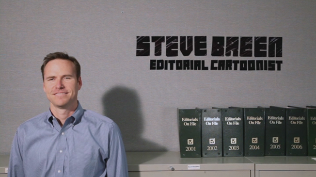

From Nothing, Something profiles creative thinkers across a variety of disciplines to find the common techniques, habits and neuroses that lead to breakthrough ideas. This is an intimate, often funny look at the creative process - straight from some of our culture’s most unique and accomplished talents.
The film follows sixteen successful creative people into their work spaces, during their everyday routines. What’s revealed is the dedication required - and the costs exacted - to bring ideas into the world. The result is an unvarnished portrayal of faith, perseverance, and inspiration at work.
-
Singer/songwriter Sara Quin is half of the twin-sister musical duo Tegan & Sara. They’ve recorded nine studio albums, been nominated for five Juno Awards, and played stages worldwide including Coachella, Lollapalooza, Bonnaroo, and Lilith Fair. In December 2012, Tegan & Sara were nominated for their first Grammy, and their single “Closer” debuted in the top 40 on the U.S. Alternative Chart. Their most recent album, Heartthrob was named to the Polaris Prize shortlist for best Canadian album of the year. They most recently had a Billboard hit with “Everything is Awesome” (featuring Lonely Island) in The Lego Movie, which received a 2014 Academy Award nomination for Best Original Song.
-
Tom Perrotta is the author of six acclaimed novels, including Little Children and Election which have both been adapted into Oscar-nominated films. Tom’s latest novel, The Leftovers, debuted at #6 on the New York Times bestseller list and was adapted into a critically-acclaimed original series on HBO, which Tom co-Executive-Produced with Damon Lindelhof (Lost, Star Trek, Prometheus).
-
Maria Bamford has performed on The Tonight Show with Jay Leno, Conan, and Jimmy Kimmel Live and is the only female comic to have two Comedy Central specials of her own. Bamford appeared in the documentary The Comedians of Comedy with Zach Galifiniakis, Patton Oswalt, and Brian Posehn. She has been featured in over 40 movies and TV shows - most recently as Louis CK’s deranged love interest on Louie. Released in 2009, Bamford’s Unwanted Thoughts Syndrome was listed by The Onion as one of the “Best Comedy CDs of the Decade.”
-
Since founding Ohne Titel in 2006, Alexa Adams and Flora Gill have been a staple of NY Fashion Week and twice been finalists for the CFDA/Vogue Fashion Fund Award. Their collections are sold in a dozen countries worldwide and their work appears regularly in Harper’s Bazaar,Vogue and Women’s Wear Daily. Most recently their clothes have been modeled by such iconic women as Rihanna, Emma Watson and Brooklyn Decker.
-

Moungi Bawendi and W. David Lee are cancer researchers and entrepreneurs at Massachusetts Institute of Technology. They are at the forefront of research on cancer detection systems that surgically eliminate the disease on a cellular level. They have more than 60 patents between them.
-
Born in Karachi, Pakistan, Huma Bhabha is a painter and sculptor whose work has been exhibited at such venues as The Museum of Modern Art, MOMA/PS1, and the Whitney Biennial in New York, and the Saatchi Gallery and Royal Academy in London. Her work has been lauded extensively in The New York Times, New York Magazine, The Guardian, and Huffington Post. She is represented by galleries in New York, Toronto, London and Amsterdam.
-
Video game designer Jason Rohrer is a leader of the indie "art game movement." Jason's games, which he programs, designs and scores entirely by himself, have been downloaded more than one-and-a-half million times. His work has been featured in Wired, PCGamer, The New York Times, The Onion, Slate, BusinessWeek, and Esquire Magazine's "Genius Issue."
-
Jay Greenberg is a classical composer who had his first symphony performed in Carnegie Hall at age 14. His music has since been performed by The London Symphony Orchestra and The New York City Ballet. By age 17, Jay had twice been featured on 60 Minutes which called him “perhaps the greatest talent to come along in 200 years.”
-
Keith Young is an Emmy-nominated choreographer whose resumé includes Rent, the Academy Awards and the Grammy telecasts, and Dancing with the Stars, plus tours and videos with Madonna, Outkast, and Red Hot Chili Peppers.
-
Susan Feniger and Mary Sue Milliken have opened restaurants in Los Angeles and Las Vegas, co-authored five cookbooks, hosted over 200 episodes of their own Food Network series Too Hot Tamales, and appeared on Oprah, Iron Chef, and Top Chef Masters. They currently own the Border Grill with locations in Santa Monica, downtown LA, and Las Vegas.
-
Neville Page is a renowned Hollywood creature designer who’s worked with directors such as James Cameron, Stephen Spielberg, Ridley Scott, and J.J. Abrams. His credits include modern sci-fi blockbusters such as Avatar, Cloverfield, Tron: Legacy, Watchmen, Star Trek, Oblivion, Super 8, and Prometheus. He’s currently one of the judges on Face Off, a series on SyFy Network that was just renewed for its fourth season.
-
A designer of residential and public buildings, Preston Scott Cohen is Chair of Architecture at Harvard and recipient of the Academy of Arts and Letters Award in Architecture. His latest project is the $30MM Taiyuan Museum in Shanxi Province, China. His designs are in the permanent collection at MOMA and have been featured in The New York Times, Conde Nast TRAVELER and Architect Magazine.
-

Steve Breen is the cartoonist at the San Diego Times Union. His work has appeared in more than 150 publications, including Time Magazine, USA Today, The New York Times. He’s twice won the Pulitzer Prize for Editorial Cartooning. His new book of illustrations, Unicorn Executions, was the recent subject of a studio bidding war, and is now in development to become a major motion picture at Universal.
Director/Producer: Tim Cawley
Executive Producers: Lisa Belden, Eran Lobel, Mark Hankey
Producers: Amy Appleton, Jim Buckley
Director of Photography: Geoff McAuliffe
Camera: Henrique Ghersi
Sound & Mix: Mark Wong
Score: Conan Skyrme
Titles: Toil/Boston
Production: Five2Nine Films, Brickyard Filmworks, Element Productions
-
-
“Waves away the magic dust around inspiration and presents the development of successful ideas as a combination of chance, timing and dedicated hard work. Inspiring.” - The Rocker
-
“From Nothing, Something is an interesting movie because it has to visualize a very interior, cerebral thing: the creative process. The fact that it pulls this off is the greatest signifier of its success.” - Days of Docs
-
“Engaging. Insightful. One leaves the film not only with more ideas as to how the creative process works, but inspired and elated.” “One of the best films of the year.” – Kriofske Mix
-
“We discover surprising commonalities among these talents. Beautifully shot. Fascinating.” – Arts Fuse (Best of the Fest, IFFBoston Recap)
-
“Inspiring and motivating.”– Fast Company
-
“Fascinating. A unique film. Executed with passion and precision.” – The Lonely Reviewer
-
-
-
“A film that challenges us to awaken our senses.” Les Meconnus, Montreal
-
“What goes on inside the heads of uber-creative people? This stimulating, fast-paced doc reveals the zany personalities of eccentric geniuses.” – Arts & Opinion
-
“4/5 stars. Illuminating and often mesmerizing.” – The Film Yap
-
“Intelligent and entertaining. Few filmmakers succeed in approaching the filmmaking journey through the lenses of both intellect and inspiration, but Cawley proves to be the exception. I found myself completely and utterly captivated.” – theindependentcritic.com
-
"Immediately after the movie ended...I was struck with the same inspiring urges felt by the film's subjects" – Filmbalaya
-
“Engrossing and entertaining. Highly recommended.” - Blogging Ashland
-
-
-
“Fascinating. A well-made movie about a fun topic.” – Cinedraft
-
“Offers refreshing insight on many industries, disregarding stereotypes to break down what “being creative” truly means. From Nothing, Something connected on a much deeper level than I thought possible.” - The Sneaky Sneak
-
“Lively and Entertaining” - Video Librarian
-
“Inventive. Colorful. Expressive. A worthwhile trip for anyone interested in creativity.” - Library Journal
-
“Unique. Inspiring. Reveals a level of candidness you could never find in a million years with big-budgeted, star-laden films of similar anatomy.” - ATOD Magazine
-
“Fascinating. I dare you to watch this movie and not get inspired.” - Perspectives Blog
-
-
-
“Fascinating. A well-made movie about a fun topic.” – Cinedraft
-
“The film is insightful, funny, touching, inspirational and utterly fascinating. Ultimately reveals the art is what all of us do every day.” – Toronto Film Scene
-
“The perfect film for those days when everything is going wrong and you start to question your own ideas and direction.” Concrete Playground
-
-
-
-
-
-
-
- Architecture & Design Film Festival/NY, Los Angeles
- Design Indaba, Cape Town
- Architecture & Design Film Festival/Denver (Opening Night Film)
- Resene Architecture & Design Film Festival/New Zealand (Opening Night Film)
- Seattle Design Festival
- Portland Design Festival (Opening Night Film)
- Milan Design Film Fest (Opening Night Film)
- Bangkok Design Festival
- Toronto Design Offsite Festival (Opening Film)
- Orange County Museum of Art (Newport Beach, California)
- Southeastern Center For Contemporary Art (Winston-Salem)
- Museum of Photographic Arts (San Diego)
-
- Design Museum of Atlanta
- Goldstein Museum of Design (Minneapolis, MN)
- Auckland Art Museum (New Zealand)
- Australian Center for the Moving Image (Melbourne)
- Singapore National Design Center
- FADfest/Filmoteca de Cataluya (Barcelona)
- Art Museum of Alberta (Canada)
- Sheffield Design Week/UK (Closing Night Film)
- Design Museum Portland/Northwest Film Center (OR)
- Vermont Design Week
- Main Street Arts (NY)